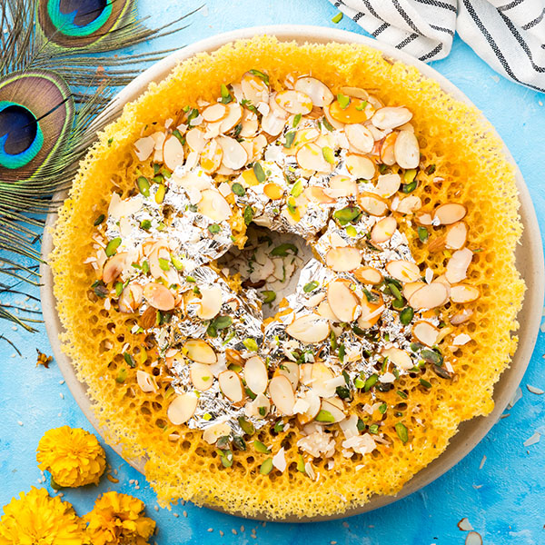

Gulab Jamun
Ingredients
- Milk powder (100 grams) , unsweetened
- Maida / plain flour(60 grams)
- Baking powder
- Ghee or oil
- Sugar
- Cardamom
Recipe Instructions
- Firstly, in a large bowl take milk powder, ½ cup maida and baking powder. Mix well, homemade gulab jamun mix is ready.
- Now add 2 tbsp ghee and mix well making the flour moist. Further, add milk as required start to combine.
- Combine well forming a soft dough. Do not knead the dough. Cover and rest for 10 minutes.
- Prepare the sugar syrup by taking 2 cup sugar, 2 cup water, 2 cardamom and ¼ tsp saffron.Cover and keep the sugar syrup aside.
- After 10 minutes or resting the dough, start to prepare small ball sized jamuns. Deep fry in medium hot oil or ghee. frying in ghee gives good flavour to jamuns.
- Stir continuously and fry on low flame. Fry until the jamuns turn golden brown. Drain off and transfer the jamun into a hot sugar syrup.
- Cover and rest for 2 hours or until jamuns absorb the sugar syrup and doubles in size. Finally, enjoy gulab jamun with ice cream or as it is.

Ghewar
Ingredients
- ½ cup milk, chilled
- 2 cup maida / plain flour
- dry fruits, for garnishing
- Ghee or oil
- Sugar
- Cardamom
Recipe Instructions
- Firstly, take ½ cup ghee and rub with ice block. Now add 2 cup maida and crumble well.
- Further, add ½ cup chilled milk and give a rough mix.
- Additionally, add 3 cup of chilled water, 1 tsp lemon juice and make a smooth flowing consistency
- Pour the 2 tbsp of batter keeping a good distance from hot oil. The batter will splatter and later the froth subsides. repeat 10-15 times
- Pull the ghevar out once cooked, and drain off the oil completely. Pour the sugar syrup over ghevar, garnish with chopped nuts and sprinkle cardamom powder.
- Finally, garnish the ghevar with silver vrak or rabri and ready to serve.

Kaju Katli
Ingredients
- 2 cup cashew / kaju
- 1 cup sugar
- ½ cup water
- 1 tsp ghee /butter
- ¼ tsp cardamom powder
Recipe Instructions
- Firstly, in a mixi take 2 cup cashew and blend to a fine powder. make sure to pulse and blend else, the cashew will release oil and turns into a paste. Sieve the cashew powder making sure there are no lumps. Keep aside.
- In a large kadai take 1 cup sugar and ½ cup water. Stir well and dissolve sugar. boil for 5 minutes or until 1 string consistency is attained.
- Add in powdered cashew and mix well. Stir continuously until the mixture is well combined and smooth paste is formed. Now add 1 tsp ghee and ¼ tsp cardamom powder. mix well.
- Continue to cook until the mixture turns smooth paste and starts to separate pan slightly. do not overcook, as the burfi will turn hard. Transfer the mixture on to the butter paper. make sure to grease the butter paper with ghee.
- Now fold using a spatula until the mixture thickens forming a dough. Once the dough is formed, knead slightly, to form a soft dough.
- Place the cashew dough between butter paper and roll using a rolling pin. Roll slightly thick making sure it's uniform. Now grease with ghee and apply silver leaf or silver vark.
- Now cut into diamond shape or shape of your choice. Finally, enjoy kaju katli for a month when stored in an airtight container.